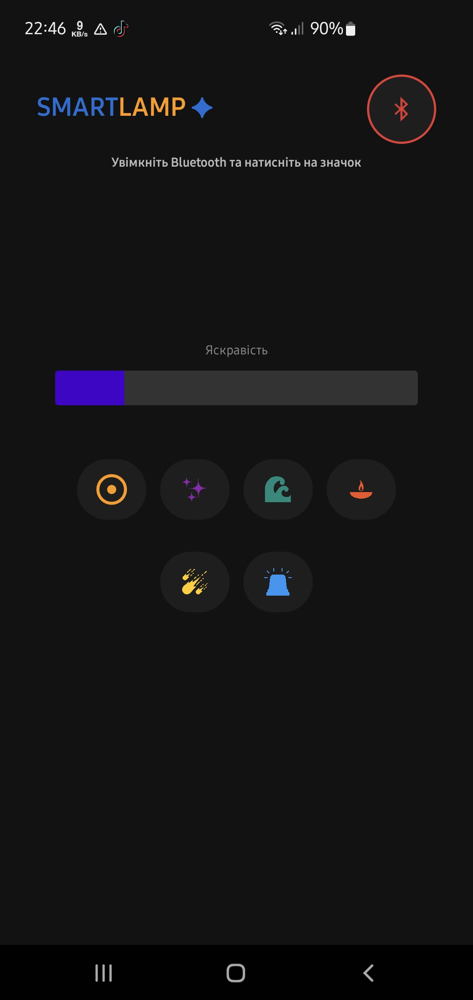
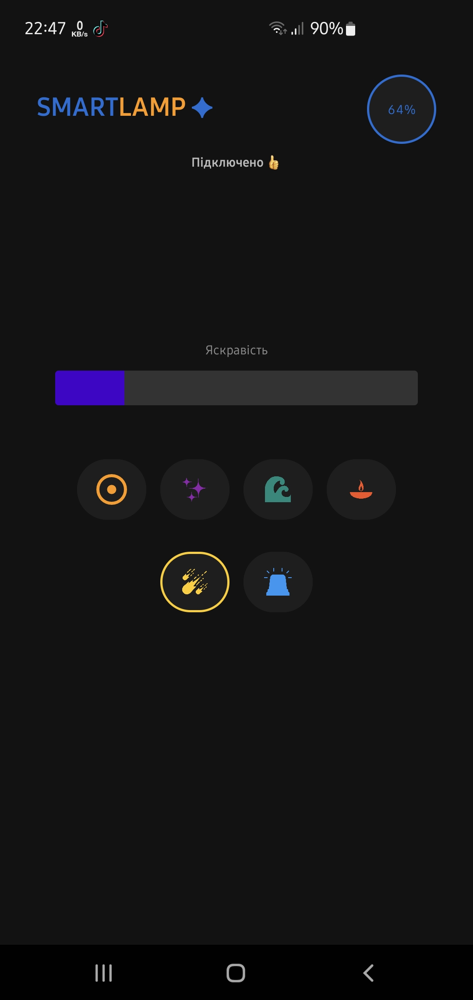
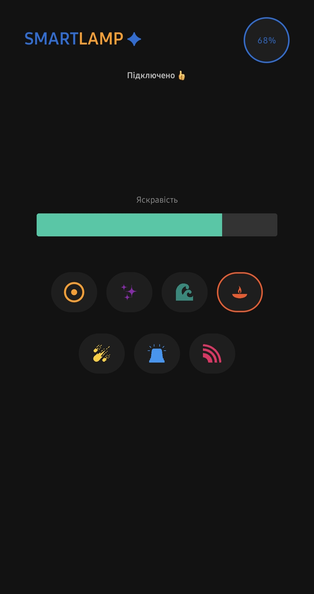
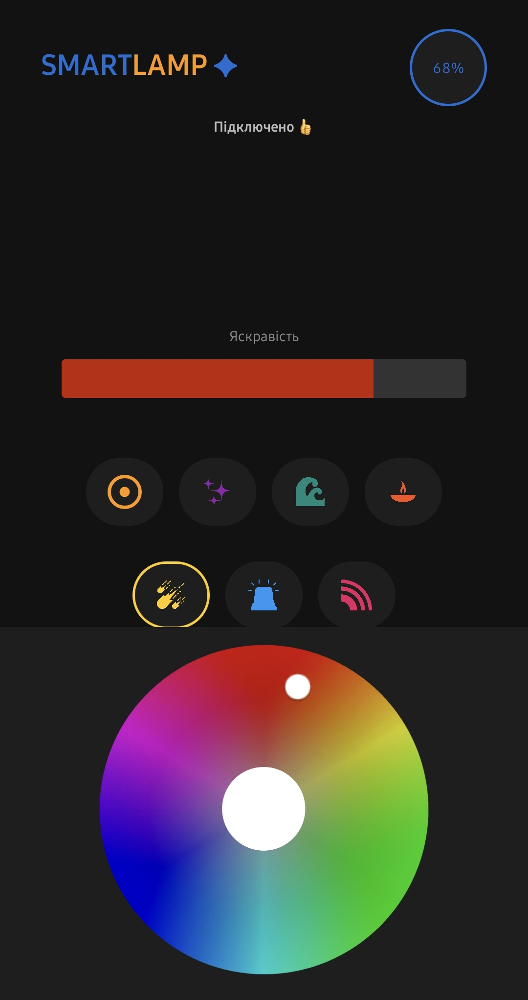
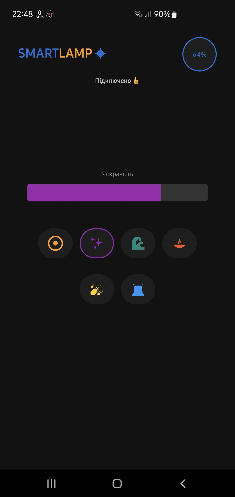

Прив’яжіть додаток
При першому запуску введіть ID код. Він є на дні Вашої підставки. Для підтвердження потрібно підтвердити прив’язку кнопкою на підставці.

Огляд пристрою
Ви можете слідкувати за онлайн статусом вашої підставки та підставки вашого партнера. Можна дати ім’я підставці партнера.

Статус чашок
Візуальне відображення наявності Вашої чашки(верхня індикація) та чашки партнера(нижня індикація). Колір залежить від температури чашки.

Режими світильника
Віртуальна підставка може працювати як НІЧНИК: вибирайте режим на свій смак! Кнопка на нічнику слугує для ввімкнення/вимкнення нічника(довге натискання) та перемикання режимів(коротке натискання).

Кастомізація підсвітки
Зручна палітра для вибору будь-якого відтінку. Просто натисніть на кнопку режиму ще раз.

Динамічні анімації
Режими "Космос", "СтробосКоп" та "Веселка" також Вам сподобаються.

Деталі підставок
Перегляд точної інформаціїпро ваші підставки. Просто натисніть на логотип CUPLE. Тут можна відв’язати підставку (кнопка "Про додаток")